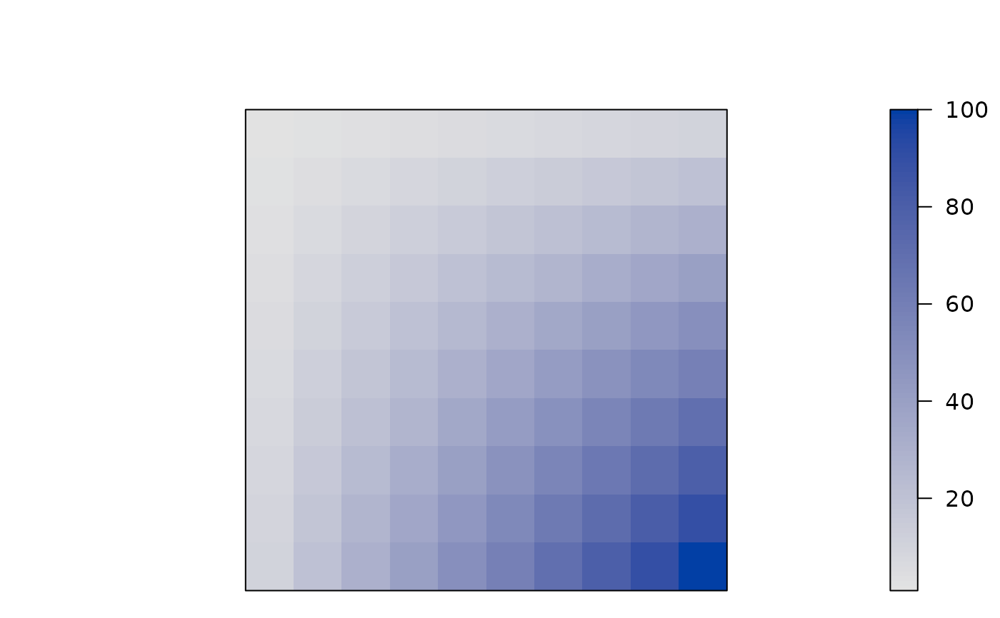
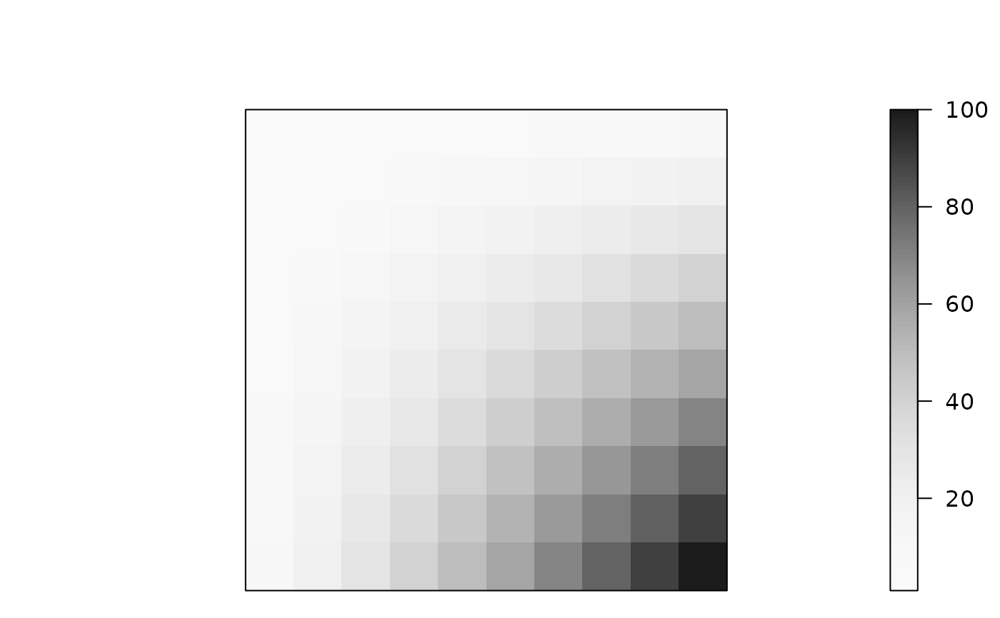
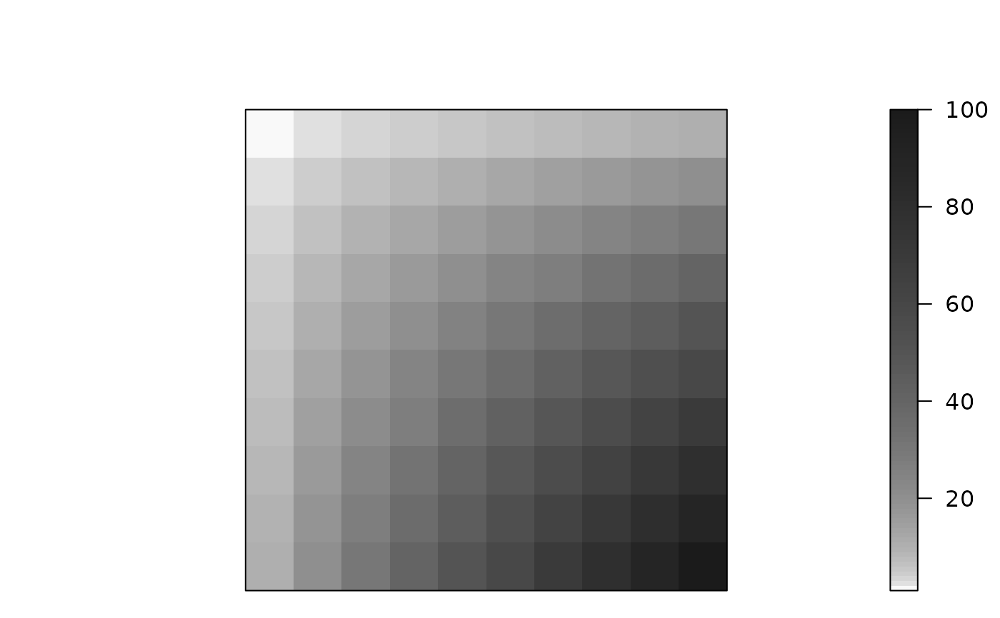
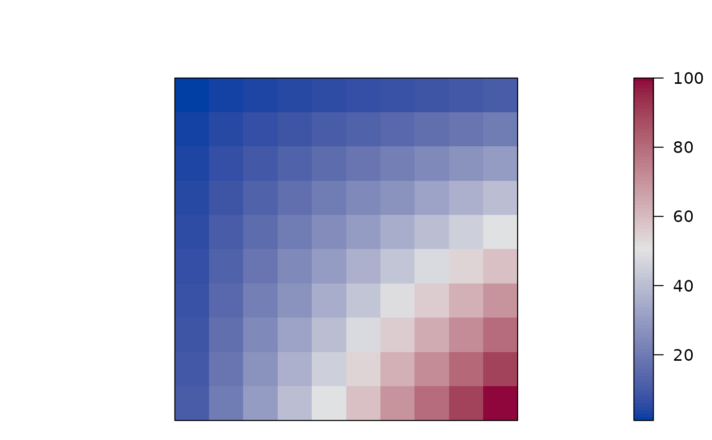
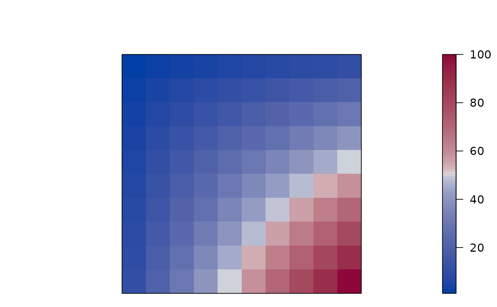
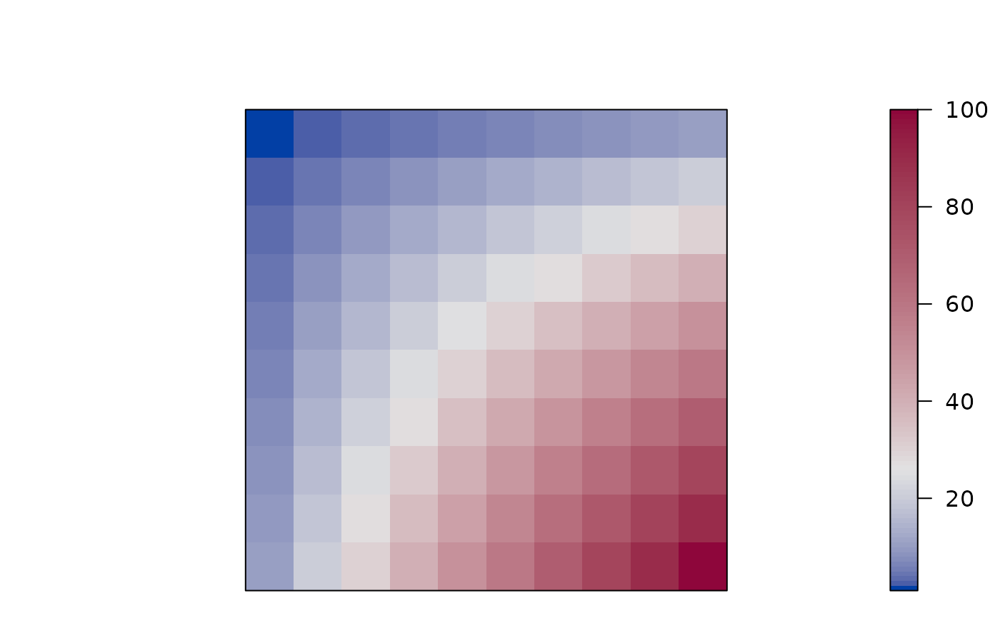
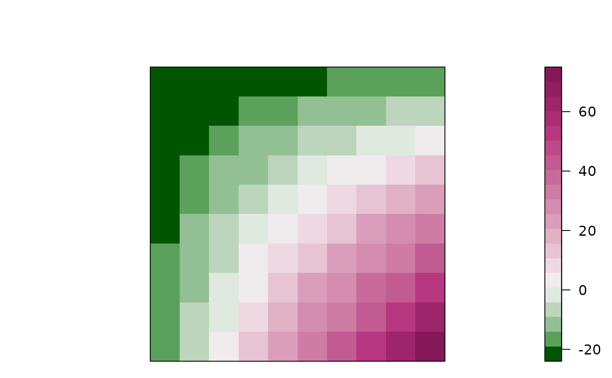
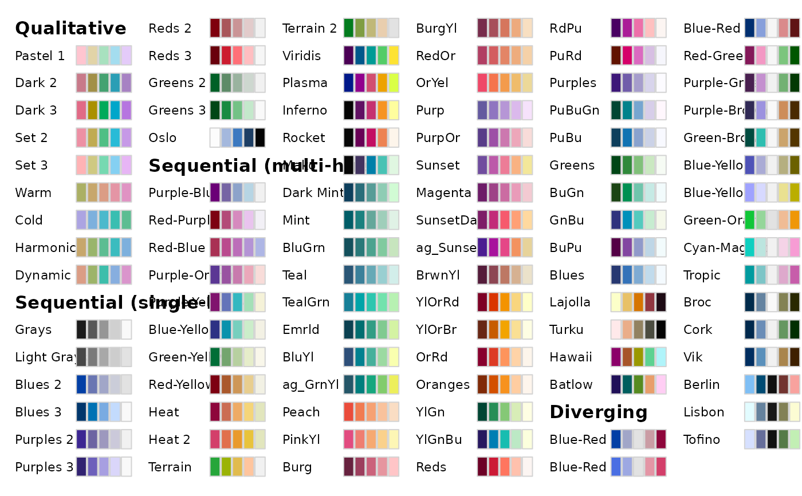
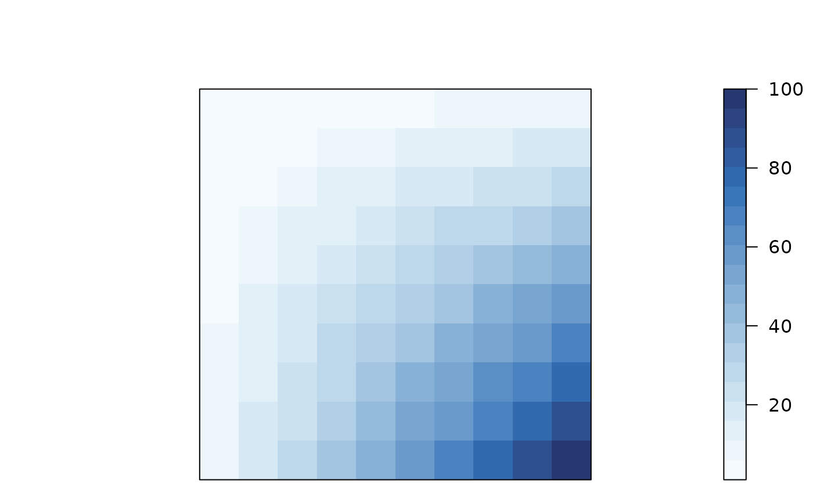
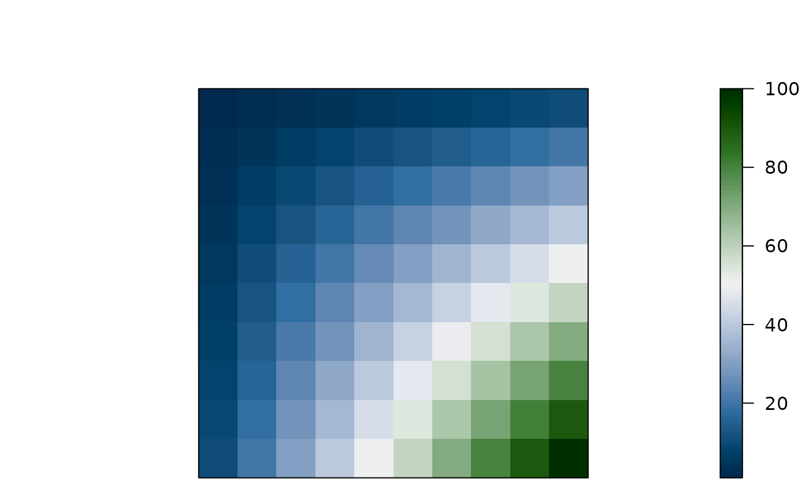

Defines several color palettes for pimage(), dissplot() and
hmap().
Usage
bluered(n = 100, bias = 1, power = 1, ...)
greenred(n = 100, bias = 1, power = 1, ...)
reds(n = 100, bias = 1, power = 1, ...)
blues(n = 100, bias = 1, power = 1, ...)
greens(n = 100, bias = 1, power = 1, ...)
greys(n = 100, bias = 1, power = 1, ...)
grays(n = 100, bias = 1, power = 1, ...)Arguments
- n
number of different colors produces.
- bias
a positive number. Higher values give more widely spaced colors at the high end.
- power
used to control how chroma and luminance is increased (1 = linear, 2 = quadratic, etc.)
- ...
further parameters are passed on to
colorspace::sequential_hcl()orcolorspace::diverging_hcl().
Details
The color palettes are created with colorspace::sequential_hcl() and
colorspace::diverging_hcl().
The two sequential palettes are: reds() and grays() (or
greys()).
The two diverging palettes are: bluered() and greenred().
See also
Other plots:
VAT(),
bertinplot(),
dissplot(),
hmap(),
pimage()
Examples
m <- outer(1:10,1:10)
m
#> [,1] [,2] [,3] [,4] [,5] [,6] [,7] [,8] [,9] [,10]
#> [1,] 1 2 3 4 5 6 7 8 9 10
#> [2,] 2 4 6 8 10 12 14 16 18 20
#> [3,] 3 6 9 12 15 18 21 24 27 30
#> [4,] 4 8 12 16 20 24 28 32 36 40
#> [5,] 5 10 15 20 25 30 35 40 45 50
#> [6,] 6 12 18 24 30 36 42 48 54 60
#> [7,] 7 14 21 28 35 42 49 56 63 70
#> [8,] 8 16 24 32 40 48 56 64 72 80
#> [9,] 9 18 27 36 45 54 63 72 81 90
#> [10,] 10 20 30 40 50 60 70 80 90 100
pimage(m)

pimage(m, col = greys(100, power = 2))

pimage(m, col = greys(100, bias = 2))

pimage(m, col = bluered(100))

pimage(m, col = bluered(100, power = .5))

pimage(m, col = bluered(100, bias = 2))

pimage(m - 25, col = greenred(20, bias = 2))

## choose your own color palettes
library(colorspace)
hcl_palettes(plot = TRUE)

## blues (with 20 shades)
pimage(m,
col = colorspace::sequential_hcl(20, "Blues", rev = TRUE))

## blue to green (aka "Cork")
pimage(m,
col = colorspace::diverging_hcl(100, "Cork"))
